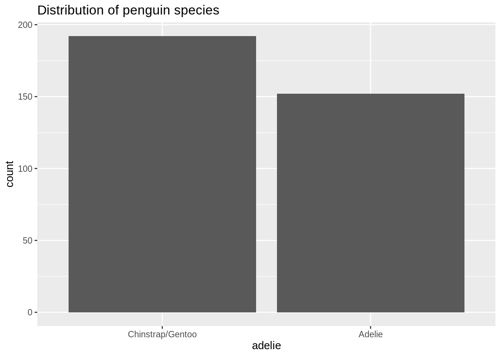

library(tidyverse)
library(tidymodels)
library(palmerpenguins)
library(knitr)AE 10: Odds ratios
Important
Go to the course GitHub organization and locate the repo titled ae-10-odds-ratios-YOUR_GITHUB_USERNAME to get started.
Packages
Data: Palmer penguins
In this application exercise we’ll work with the penguins data set from the palmerpenguins package. This data set contains measurements and other characteristics for over 300 penguins observed near Palmer Station in Antarctica.
We will use the following variables:
| variable | class | description |
|---|---|---|
| species | integer | Penguin species (Adelie, Gentoo, Chinstrap) |
| island | integer | Island where recorded (Biscoe, Dream, Torgersen) |
| flipper_length_mm | integer | Flipper length in mm |
The goal of this analysis is to use logistic regression to understand the relationship between flipper length, island, and whether a penguin is from the Adelie species.
Response variable
We need to create a new response variable to identify whether a penguin is from the Adelie species.
penguins <- penguins %>%
mutate(adelie = factor(if_else(species == "Adelie", 1, 0)))# check variable
penguins %>%
count(adelie, species)# A tibble: 3 × 3
adelie species n
<fct> <fct> <int>
1 0 Chinstrap 68
2 0 Gentoo 124
3 1 Adelie 152# visualize response
ggplot(data = penguins, aes(x = adelie)) +
geom_bar() +
labs(title = "Distribution of penguin species") +
scale_x_discrete(labels = c("1" = "Adelie", "0" = "Chinstrap/Gentoo"))
Part 1: Odds Ratios
Let’s start by looking at the relationship between island and whether a penguin is from the Adelie species.
- What does the
values_fillargument do in the following chunk?
penguins %>%
count(island, adelie) %>%
pivot_wider(names_from = adelie, values_from = n, values_fill = 0)# A tibble: 3 × 3
island `0` `1`
<fct> <int> <int>
1 Biscoe 124 44
2 Dream 68 56
3 Torgersen 0 52Calculate the odds ratio of a penguin being from the Adelie species for those recorded on Dream compared to those recorded on Biscoe.
You want to fit a model using
islandto predict the odds of being from the Adelie species. Let \(\pi\) be the probability a penguin is from the Adelie species. The model has the following form. What do you expect the value of \(\hat{\beta}_1\), the estimated coefficient for Dream, to be?
\[ \log\Big(\frac{\pi}{1-\pi}\Big) = \beta_0 + \beta_1 ~ Dream + \beta_2 ~ Torgersen \]
- Fill in the code below to fit the model. Once you do, remove the chunk option
eval: falseso that the chunk actually gets evaluated.
adelie_island <- ___ %>%
set_engine("___") %>%
fit(___ ~ ___, data = penguins, family = "binomial")
tidy(adelie_island)- Based on this model, what are the odds of a penguin being from the Adelie species if it was recorded on Biscoe island? on Dream island?
Part 2: Add flipper length
Let’s add flipper length to the model.
adelie_island_flipper <- logistic_reg() %>%
set_engine("glm") %>%
fit(adelie ~ island + flipper_length_mm, data = penguins, family = "binomial")
tidy(adelie_island_flipper)# A tibble: 4 × 5
term estimate std.error statistic p.value
<chr> <dbl> <dbl> <dbl> <dbl>
1 (Intercept) 48.0 5.83 8.24 1.73e-16
2 islandDream -2.12 0.530 -4.00 6.20e- 5
3 islandTorgersen 18.3 1305. 0.0141 9.89e- 1
4 flipper_length_mm -0.239 0.0286 -8.38 5.14e-17- Write the regression equation.
\[\log\Big(\frac{\hat{\pi}}{1 - \hat{\pi}}\Big) = ???\]
Interpret the coefficient of
flipper_length_mmin terms of the log-odds of being from the Adelie species.Interpret the coefficient of
flipper_length_mmin terms of the odds of being from the Adelie species.Interpret the coefficient of
Dreamin terms of the odds of being from the Adelie species.
Part 3: Change in odds
How do you expect the log-odds of being from the Adelie species to change when going from a penguin with flipper length 185 mm to a penguin with flipper length 200 mm? Assume both penguins were recorded on the Dream island.
How do you expect the odds of being from the Adelie species to change when going from a penguin with flipper length 185 mm to a penguin with flipper length 200 mm? Assume both penguins were recorded on the Dream island.